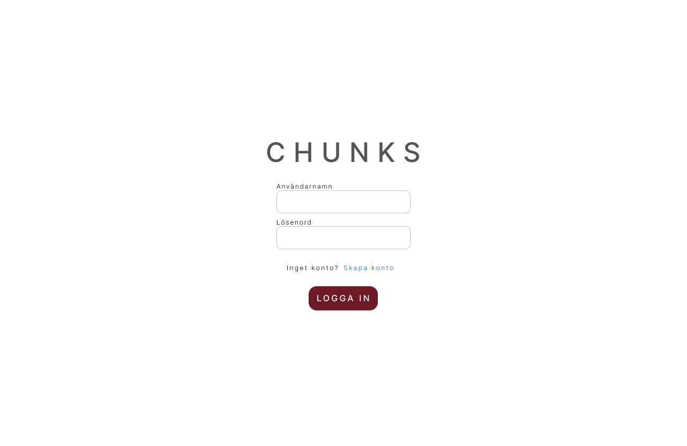

my
projects.
here are a few selected projects from my time studying UX design. each one starts with a real problem and a real group of users, and ends with a solution i'm proud to show — from research and wireframes to finished prototypes.

01. peripheral encounters
a bachelor's thesis project exploring how the iOS lock screen — a space we glance at dozens of times a day — can become a quiet, low-effort way to learn new vocabulary. through research, prototyping, and user testing, i designed a set of widgets that turn idle moments into small learning wins.
02. craftspot
a digital platform connecting local makers with people looking for handcrafted, one-of-a-kind goods — combining course booking with a community feed to help keep traditional craft alive.

03. chunks
redesigning an educational learning platform used by students to learn HTML and JavaScript — a clearer visual hierarchy, navigation and design system built around videos, exercises and quizzes.